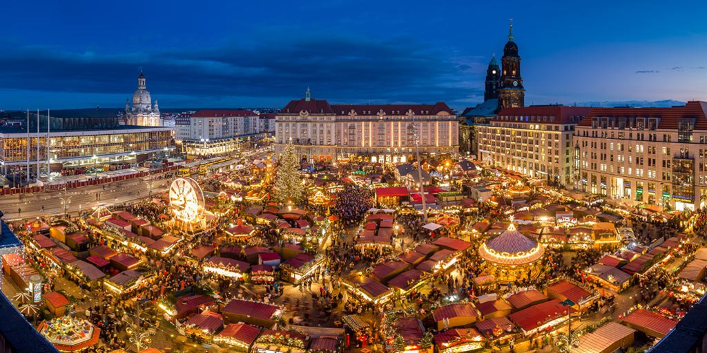

Dresdenas (arba Drezdenas) – miestas pietryèiø Vokietijoje, Saksonijos þemës sostinë, ásikûrusi Elbës slënyje. 2004 m. mieste gyveno 480 347, su priemiesèiais 800 000 gyventojø. Dresdenas ðiandien yra svarbus kultûrinis, politinis ir ekonominis Vokietijos centras. Artimiausi Vokietijos miestai yra Chemnicas, Leipcigas, Berlynas. Uþ dviejø valandø kelio á pietus yra Praha. Miestas iðsidëstæs abiejuose Elbës krantuose, didþioji dalis Elbës slënyje, pakraðèiais siekia Rûdiniø kalnø prieðkalnes. Aukðèiausias miesto taðkas, Trybenbergas, yra 384 m virð jûros lygio. Dresdenas buvo Saksonijos karaliø rezidencija. Beveik visas miestas buvo sugriautas per prieðtaringai vertinamà Dresdeno bombardavimà Antrojo pasaulinio karo pabaigoje. 1949 m. jam tapus SSRS kontroliuojamos Vokietijos Demokratinës Respublikos dalimi, neatpaþástamai pakeista miesto infrastruktûra. Miestas pradëtas atstatyti po Vokietijos susivienijimo 1990 m. 